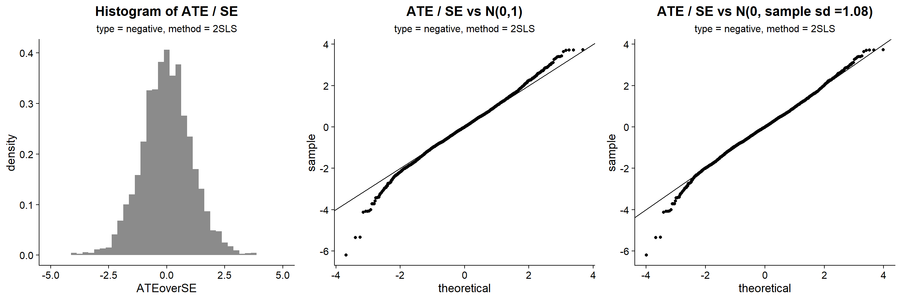
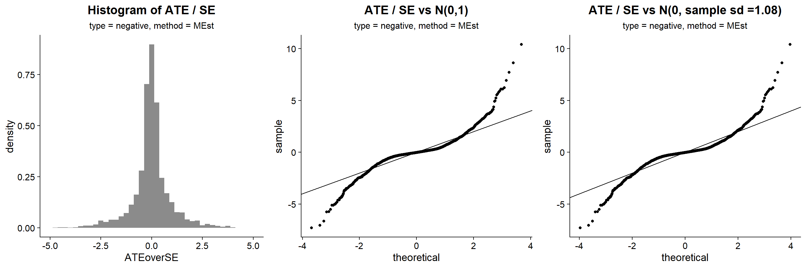
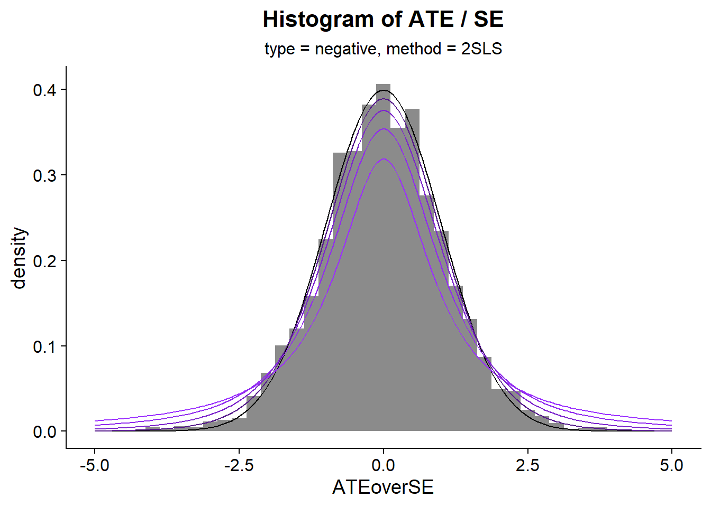

load libraries, set up parameters, set up save folders
# args = commandArgs(trailingOnly = TRUE)args =c('laptop', 'allPerturbations')require(assertthat) # for some assert statements
Loading required package: assertthat
library(dplyr)
Attaching package: 'dplyr'
The following objects are masked from 'package:stats':
filter, lag
The following objects are masked from 'package:base':
intersect, setdiff, setequal, union
library(ggplot2)library(cowplot)
Warning: package 'cowplot' was built under R version 4.1.3
theme_set(theme_cowplot() +theme(plot.title =element_text(hjust = .5),plot.subtitle =element_text(hjust = .5),strip.background =element_rect(color ='black', fill ='white')))assertthat::assert_that(length(args) >0, msg="must give arg for specifying device eg 'Rscript <filename>.R ubergenno'")
[1] TRUE
DEVICE = args[1]source('../PATHS.R') # load in data_dir and save_dir and CODE_DIR, depending on DEVICE valueassertthat::assert_that(!is.null(data_dir), msg='first arg must be: laptop, desktop, or ubergenno')
[1] TRUE
assertthat::assert_that(length(args) >1, msg="must give arg for specifying chosen AYZW name 'Rscript <filename>.R ubergenno C'")
Warning: Removed 3 rows containing non-finite outside the scale range
(`stat_bin()`).
Warning: Removed 2 rows containing missing values or values outside the scale range
(`geom_bar()`).

for MEstimator: the distribution of ATE / SE does not seem to follow the normal distribution. Even though the sample average is around 0, and the standard deviation is around 1. The distribution appears to have lighter? tails. Maybe we can consider comparing these normalized values (ATE / se) by the
Warning: Removed 22 rows containing non-finite outside the scale range
(`stat_bin()`).
Warning: Removed 2 rows containing missing values or values outside the scale range
(`geom_bar()`).

2SLS
xs =seq(from =-5, to =5, length.out =200) ATEoverSE_2SLS$p_hist +# normal(0,1)geom_line(aes(x = xs, y =dnorm(xs, mean=0, sd=1)), color ='black') +geom_line(aes(x = xs, y =dt(xs, df =1)), color ='purple1') +geom_line(aes(x = xs, y =dt(xs, df =2)), color ='purple2') +geom_line(aes(x = xs, y =dt(xs, df =4)), color ='purple3') +geom_line(aes(x = xs, y =dt(xs, df =10)), color ='purple4')

T-distribution has heavier tails than the normal. But this observed distribution has lighter tales… what if we try using a t-distribution? What is the effective sample size of the se…? Typically, ~\(n - p - 1\) but there is a more complicated procedure
# MEstimatorxs =seq(from =-5, to =5, length.out =200) ATEoverSE_MEst$p_hist +# normal(0,1)geom_line(aes(x = xs, y =dnorm(xs, mean=0, sd=1)), color ='black') +geom_line(aes(x = xs, y =dt(xs, df =1)), color ='purple1') +geom_line(aes(x = xs, y =dt(xs, df =2)), color ='purple2') +geom_line(aes(x = xs, y =dt(xs, df =4)), color ='purple3') +geom_line(aes(x = xs, y =dt(xs, df =10)), color ='purple4')